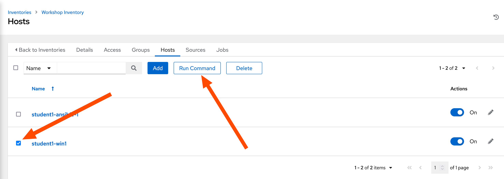
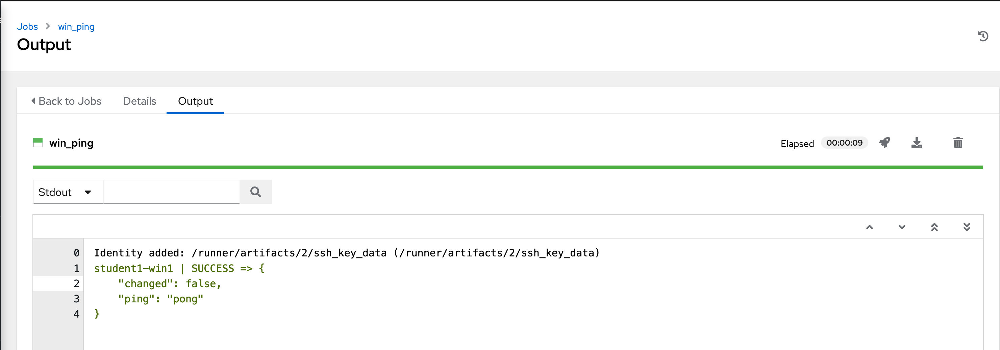
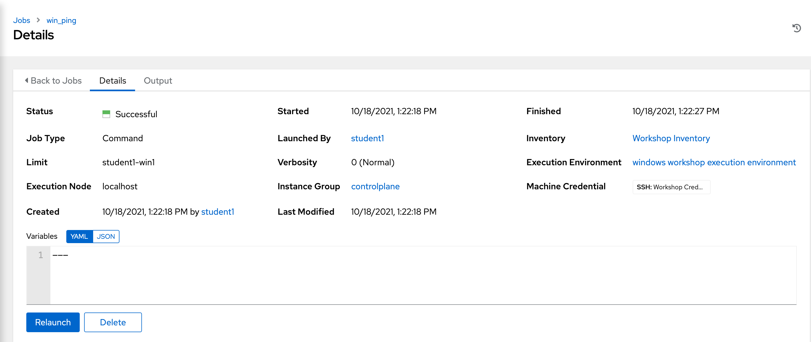
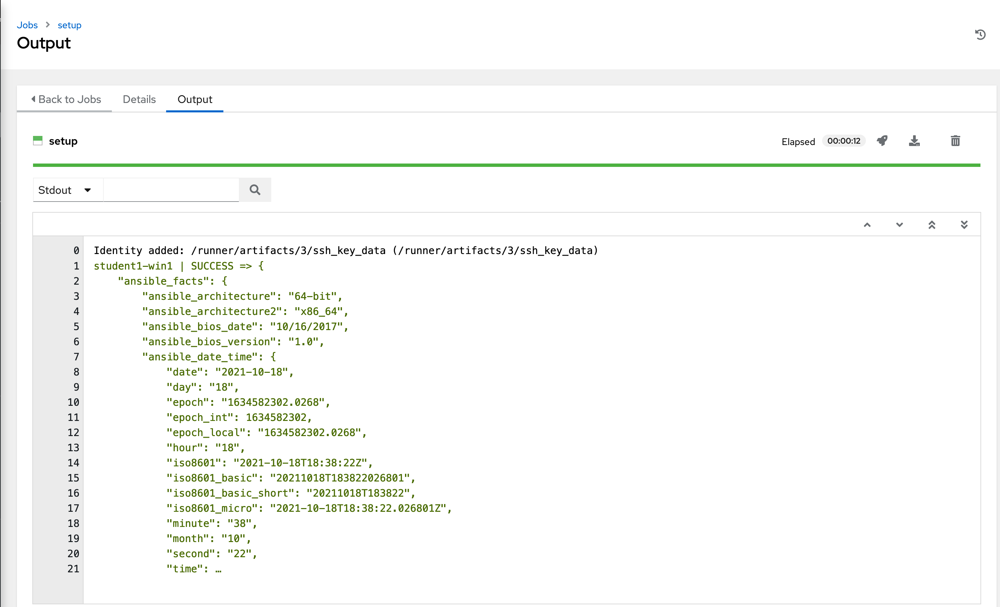
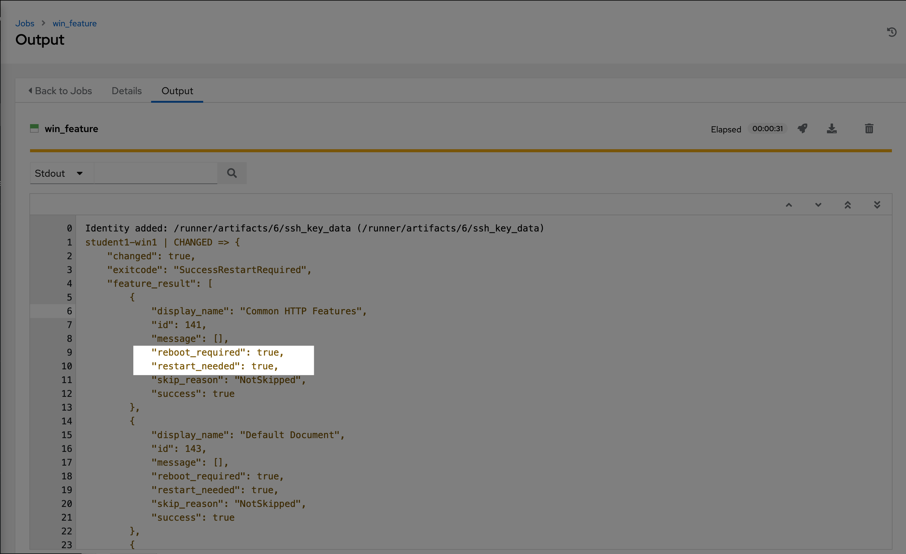

1 - Ad-hoc commands
For our first exercise, we are going to run some ad-hoc commands to help you get a feel for how Ansible works. Ansible ad-hoc commands enable you to perform tasks on remote nodes without having to write a playbook. They are very useful when you simply need to do one or two things quickly, to many remote nodes.
Ad-hoc commands can be run on the command line and with the Ansible Automation Platform. We will try both ways and switch between running ad-hoc commands on the CLI and in the AAP.
Preparation
Ensure that you are in your project folder and that you can run the Ansible CLI utility, run the following command:
If you get the message fatal: not a git repository you are not in the correct folder. In the correct folder expect this line: nothing to commit, working tree clean.
The output looks something like this:
[student@ansible-1 workshop_project]$ ansible --version
ansible [core 2.14.0]
config file = /etc/ansible/ansible.cfg
configured module search path = ['/home/student/.ansible/plugins/modules', '/usr/share/ansible/plugins/modules']
ansible python module location = /usr/lib/python3.9/site-packages/ansible
ansible collection location = /home/student/.ansible/collections:/usr/share/ansible/collections
executable location = /usr/bin/ansible
python version = 3.9.13 (main, Nov 9 2022, 13:16:24) [GCC 8.5.0 20210514 (Red Hat 8.5.0-15)] (/usr/bin/python3.9)
jinja version = 3.1.2
libyaml = True
The output gives some useful informations, the most important one are these:
config file = /etc/ansible/ansible.cfg- The currently used configuration file for Ansiblepython version = 3.9.13- The Python interpreter used on the Controller (there may be multiple Python version installed...)
Don't worry if your ansible --version command outputs config file = None, you will not need one currently.
Let's take a look at an example Ansible configuration.
This is an example configuration from a different Ansible controller.
[student@ansible-1 workshop_project]$ cat /etc/ansible/ansible.cfg
[defaults]
stdout_callback = yaml
connection = smart
timeout = 60
deprecation_warnings = False
action_warnings = False
system_warnings = False
devel_warning = False
host_key_checking = False
collections_on_ansible_version_mismatch = ignore
retry_files_enabled = False
interpreter_python = auto_silent
inventory = /home/student/lab_inventory/hosts
[persistent_connection]
connect_timeout = 200
command_timeout = 200
Step 1 - Test connection
Step 1.1 - On CLI
Ansible needs to know which hosts are targeted for the automation, therefor all Ansible content development starts with defining a inventory and sorting your hosts into groups in it. For most use cases, a inventory in the .ini format is the easiest to work with. Let's create a simple inventory with a single group called windows and put your test host in it. Create a file hosts.ini (you could leave out the file extension, by default, Ansible asumes that the file is formated in the ini format).
Add the following inventory definition and variables:
[windows]
NODEName
[windows:vars]
ansible_connection= winrm
ansible_winrm_transport= kerberos
ansible_port= 5986
ansible_host= "{{ inventory_hostname }}.global.bdfgroup.net"
ansible_user= "Your User"
Warning
Set the correct NODEName, as well as the correct value for ansible_user. Ask your trainer for assistance!
The inventory file is in .ini format, this is one of the possible formats the inventory can be provided. Ansible itself parses the inventory and uses a JSON representation, let's take a look on how Ansible sees our inventory:
The command above outputs info about all hosts in the inventory, the groups in which every host is in and which variables (mostly connection variables) are defined for every host. The ansible-inventory utility has more functionality, use the --help parameter.
Save some time and leave out some parameters?
You need to provide the path to your inventory file with the -i (--inventory) parameter everytime when executing the command.
If you don't want to add -i hosts.ini everytime you run a command, you can specify it in an ansible.cfg file in your working directory.
Ansible now knows which inventory file should be used for your project, now you can run the command like this:
All right, we have an inventory, let's test if we can reach our target node in the windows group. We will use the ansible utility to execute an ad-hoc command and will provide the ansible.windows.win_ping module. The win_ping module makes sure our windows hosts are responsive. This is not a traditional (ICMP) ping, but actually verifying both connectivity and authentication to the host.
Execute the following command:
The ad-hoc command expects a group to target (here it is the windows group) and a module with optional arguments.
Failure
Well, this didn't went well, we encountered an error.
The module was not found, let's see which collections are installed (this is the place where modules are stored).
Additional infos to modules and collections
Ansible modules are units of code that can control system resources or execute system commands. Ansible provides a module library that you can execute directly on remote hosts or through playbooks. Modules (and much more) are stored in Collections, these are a distribution format for Ansible content.
Take a look at the Ansible documentation if you need further information:
Run the following command to list all installed collections:
Failure
Another error, this one states that no collections (except the builtin collection ansible.builtin) are installed.
Let's install the missing collection:
Got an SSL:CERTIFICATE_VERIFY_FAILED error?
If you see the following error:
$ ansible-galaxy collection install ansible.windows
Starting galaxy collection install process
Process install dependency map
[WARNING]: Skipping Galaxy server https://galaxy.ansible.com. Got an unexpected error when getting available versions of collection ansible.windows: Unknown error when attempting to call Galaxy at 'https://galaxy.ansible.com/api/': <urlopen error [SSL:
CERTIFICATE_VERIFY_FAILED] certificate verify failed: self-signed certificate in certificate chain (_ssl.c:997)>
ERROR! Unknown error when attempting to call Galaxy at 'https://galaxy.ansible.com/api/': <urlopen error [SSL: CERTIFICATE_VERIFY_FAILED] certificate verify failed: self-signed certificate in certificate chain (_ssl.c:997)>
Don't worry, you can add the -c (--ignore-certs) parameter, it instructs to ignore certificate validation errors.
Ok, looks good, try the ad-hoc command again.
Failure
Another error?
A missing dependency, Ansible modules are (mostly) written in Python (or in Powershell for Windows), they sometimes need additional Python modules or libraries. Let's install the missing depedency:
We installed the pywinrm Python module with the Python package manager for the Python version Ansible is running with, this is needed for the initial connection from the Ansible Controller to the target host.
Let's install another missing dependency:
This module is needed because of the configured WinRM transport method. If we would have run the ad-hoc command, the error message would have stated the missing package.
Ok, one more try, run the ad-hoc command again.
Failure
What? Another error?? Host unreachable??
kerberos: authGSSClientInit() failed: (('No credentials were supplied, or the credentials were unavailable or inaccessible', 458752), ...
Looks like we can't authenticate against the Windows target node.
Authentication of Ansible (or in effect, us) against the Windows target node needs a Kerberos ticket.
Do you remember the ansible_user variable in your inventory file? You referenced your personal (Admin) user there, we need to create a Kerberos ticket on the Ansible Dev Node for this one. Ansible uses this user to connect to the target node.
Run the following command and input the password to authenticate your Admin-User:
Tip
Naturally, replace <username>.
Kerberos is picky when it comes to spelling and capitalization, you must use the exact spelling when issueing your Kerberos ticket as in the value of the ansible_user variable.
You can check if the ticket was granted and which principal is used with klist.
Ok, one last try with the ad-hoc command!
[student@ansible-1 workshop_project]$ ansible -i hosts.ini windows -m ansible.windows.win_ping
student1-win1 | SUCCESS => {
"changed": false,
"ping": "pong"
}
Success
Finally, everything in place! We can connect and authenticate with our Windows target node.
One of the hardest parts in Ansible is, getting the initial communication working. With Windows this is especially true, when things like Kerberos come into play. But, you made it! From now on it should get easier.
Step 1.2 - In AAP
After running the ad-hoc command on the command line, let's do it in the Automation Platform.
As before, we will need an Inventory.
Click Inventories on the left panel, and then click the name of our Inventory Workshop Inventory. Now that you are on the Inventory Details page, we will need to go select our Host. So click HOSTS.
Next to each host is a checkbox. Check the box next to each host you want to run an ad-hoc Command on. Select the Run Command button.

This will pop up the Execute Command window. From here is where we can run a single task against our hosts.
Let’s start with something really basic - pinging a host.
Fill out this form as follows
| Key | Value | Note |
|---|---|---|
| Module | win_ping |
|
| Arguments | Intentionally blank | |
| Limit | This should display the host you selected in the previous step |
Click the Next button
| Key | Value | Note |
|---|---|---|
| Execution environment | BSS EE - Windows |
Click the Next button
| Key | Value | Note |
|---|---|---|
| Machine credential | Windows Test Host username | Your personal Machine credential you created before |
Once you click LAUNCH you will be redirected to the Job log. Every job and action in Automation Controller is recorded and stored. These logs can also be exported automatically to another logging system such as Splunk or ELK.
The output tab is shown by default. Any output generated by the task is displayed here.

The details tab shows information on when the task was executed, by whom, with what credential and what hosts were affected.

The results returned will be different depending on which module is used, as they all handle and deal with different data sets depending on the task. No matter which module is used, you will always see a color coded STATUS of either SUCCESS, FAILURE, CHANGED, or SKIPPING.
Step 2 - Get infos about target
Ad-hoc commands are perfect to gather informations about your target system.
Step 2.1 - On CLI
We will now take a look at your Windows node configuration. The setup module queries the remote host for various data and returns that data as Ansible facts. This data is useful to determine things such as operating system version, hardware configuration, among other data points. This can then be used in your playbook for all sorts of reasons such as determining whether a task should even run, or determining what the name of a package should be based upon the operating system version.
The setup module will run automatically at the beginning of every playbook, unless configured not to, so that this data is always available to your playbook.
Run the following command:
You are seeing loads of useful informations and you can use every bit as variables in your playbooks later on!
Step 2.2 - In AAP
After running the ad-hoc command to gather infos on the command line, let's do it again in the Automation Platform.
You need to go back to Inventories Workshop Inventory Hosts Activate Checkbox of Windows host Click Run command.
Lets go ahead and run the setup module to look at the output. Fill out the EXECUTE COMMAND form again with this info.
| Key | Value | Note |
|---|---|---|
| Module | setup |
|
| Arguments | Intentionally blank | |
| Limit | This should display the host you selected in the previous step |
Click the Next button
| Key | Value | Note |
|---|---|---|
| Execution environment | BSS EE - Windows |
Click the Next button
| Key | Value | Note |
|---|---|---|
| Machine credential | Windows Test Host username | Your personal Machine credential you created before |
You should see output like this:

(Note: If you click the three dots shown on line 21 in the above output, you will see all the facts returned by the setup module.)
Step 3 - Run PS command
Now let’s see how we can run a PowerShell command and view the output using the ansible.windows.win_shell module.
Step 3.1 - On CLI
You are getting more and more familiar with ad-hoc commands, now you need to provide additional arguments to the used Ansible module.
Run the following command to run the Get-Service Powershell command:
The output looks something like this:
student@ansible-1 workshop_project]$ ansible -i hosts.ini windows -m ansible.windows.win_shell -a "Get-Service"
student1-win1 | CHANGED | rc=0 >>
Status Name DisplayName
------ ---- -----------
Running AmazonSSMAgent Amazon SSM Agent
Stopped AppIDSvc Application Identity
Stopped AppMgmt Application Management
Stopped AppReadiness App Readiness
Stopped AppXSvc AppX Deployment Service (AppXSVC)
Stopped AWSLiteAgent AWS Lite Guest Agent
Running BFE Base Filtering Engine
Stopped BITS Background Intelligent Transfer Ser...
Running CertPropSvc Certificate Propagation
Stopped cfn-hup CloudFormation cfn-hup
Stopped ClipSVC Client License Service (ClipSVC)
...
The output is not green anymore as before, but yellow, the output also states that something was CHANGED.
We do know that nothing changed, but for Ansible any command could be provided through Powershell, it can't predict what will happen or if the desired state is already reached. This is called idempotency and the win_shell (and win_command) module do not support this. All other Windows modules work idempotent, try to use these instead of win_shell or win_command.
Step 3.2 - In AAP
You know the drill, go to the spot to run ad-hoc commands against the Windows target node.
Let’s fill out the form again, but this time use the win_shell module to execute the Get-Service Powershell command.
| Key | Value | Note |
|---|---|---|
| Module | win_shell |
|
| Arguments | Get-Service |
|
| Limit | This should display the host you selected in the previous step |
Click the Next button
| Key | Value | Note |
|---|---|---|
| Execution environment | BSS EE - Windows |
Click the Next button
| Key | Value | Note |
|---|---|---|
| Machine credential | Windows Test Host username | Your personal Machine credential you created before |
Launch the job and view the results. You will see that it returns a direct output of what the Powershell command returned. This data can be stored to a variable and directly parsed inside your Ansible playbook later on.
And run it one more time with the Get-Process Powershell command.
| Key | Value | Note |
|---|---|---|
| Module | win_shell |
|
| Arguments | Get-Process |
|
| Limit | This should display the host you selected in the previous step |
Click the Next button
| Key | Value | Note |
|---|---|---|
| Execution environment | BSS EE - Windows |
Click the Next button
| Key | Value | Note |
|---|---|---|
| Machine credential | Windows Test Host username | Your personal Machine credential you created before |
The difference between ansible.windows.win_shell and ansible.windows.win_command is that win_command arguments will not be processed through the shell, so variables like $env:HOME and operations like <, >, |, and ; will not work (use the ansible.windows.win_shell module if you need these features). The ansible.windows.win_command module is much more secure as it’s not affected by the user’s environment.
End Result
Ad-hoc commands may be useful to run once in a while. However, as automation continues to grow within an environment, they are used less often.
As you saw, doing stuff on the command-line requires a lot more configuration and dependency handling. The AAP abstracts most of the stuff from you (e.g. by bundling all necessary dependencies in a container image). Still, development of Ansible content is done with Ansible on the Command-Line, you will get used to it, the more you try!
Hint
When a task is performed on a Windows server, Ansible is smart enough to know whether a reboot is required after executing that task. The below is part of the output of the command to remove the IIS feature. The output of this task can be used in subsequent tasks, like whether or not to reboot before continuing.

All modules used in the previous exercises are described in detail in the Ansible documentation.